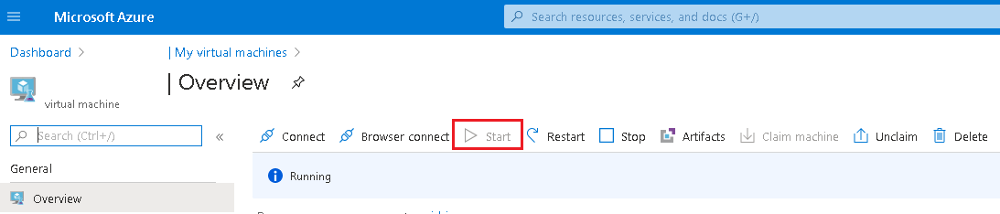

Using your Cloud VM
Creating a VM
A GEO Virtual Machine will be created for you and you will not have permission to create a GEO-VM.
See the FAQ if you need to make changes to your virtual machine.
Info
Depending on your project, you may have the ability to create a standard virtual machine via the CAE [link needed], or create a workspace in the AAW[link needed].
Finding a VM
From ______ page select Overview, scroll down until you see your VM under My virtual machines. Click on your VM to access its Overview page.
Start Your Virtual Machine
-
From the Overview page for your VM, click on the Start button.

-
It takes a few minutes for your VM to start up. Monitor its startup progress by selecting the Notifications icon at the top right of the window.

Connect To Your Virtual Machine
-
From the Overview page for your VM, click on the Browser connect button (if you do not see a Browser connect button you might have to click on the Connect button and then choose Bastion from the dropdown menu).

-
Ensure the Open in new window checkbox is selected, enter the Username and Password that you used when you created your VM, and click on the Connect button. Your VM should open in a new browser tab.
Note : By default, the Ubuntu virtual machine opens in Terminal mode. You can access the GUI of your Ubuntu machine from a Windows machine using X2Go.
Note : After attempting to login for the first time, an error may appear that a popup blocker is preventing a new window to open. To disable it, an icon will pop up on the browser's search bar, select the button and click always allow.

Stop Your Virtual Machine
Virtual machines only incur costs while they are running. You should shut down your virtual machine when not in use to prevent unneccessary charges.
-
From the Overview page for your VM, click on the Stop button.

Common Errors & Fixes
Tips
 Using keyboard shortcuts while connected to a VM may not result in the same action as expected. (i.e. ctrl + z will close your main broswer window, not the VM browser window)
Using keyboard shortcuts while connected to a VM may not result in the same action as expected. (i.e. ctrl + z will close your main broswer window, not the VM browser window)
VMs have an auto-shutdown time of 7pm est. (this can be adjusted upon request)
Moving the taskbar to the top or side of the VM will help differentiate between your OZ-PC and VM workspace.